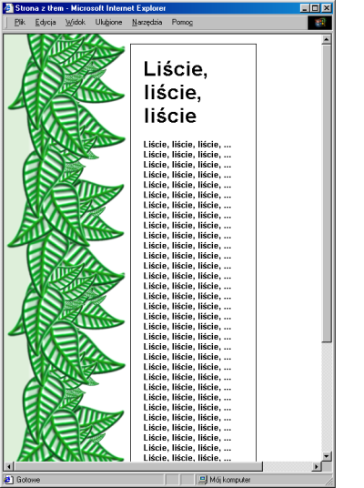
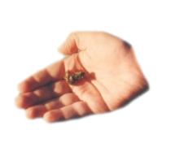
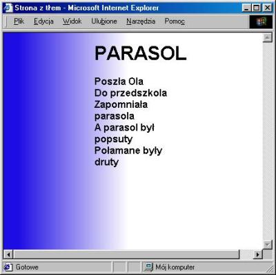

T³a stron WWW
Style definiuj¹ce t³o
Ustalenie t³a realizujemy za poœrednictwem akruszy stylów.
Atrybut background-image
okreœla ustala adres URL pliku stanowi¹cego t³o.
Dodatkowymi w³aœciwoœciami, jakie mo¿emy modyfikowaæ w odniesieniu do
t³a s¹
- background-repeat - powielanie t³a
- background-position - po³o¿enie t³a
- background-attachment - unieruchomienie t³a
Atrybut
background-repeat
ustala sposób powielania tla.
To w³aœnie automatyczne powielanie t³a obrazu
u³atwia pracê webmastera.
Dopuszczalnymi wartoœciami atrybutu
background-repeat
s¹
repeat,
repeat-y,
repeat-x oraz
no-repeat.
Wartoœci¹ domyœln¹ jest repeat.
W takim przypadku obraz t³a jest powielany w poziomie i w pionie.
WartoϾ no-repeat
powoduje, ¿e obraz nie bêdzie powielany. Natomiast wartoœci
repeat-x
oraz repeat-y
powoduj¹ powielanie t³a wy³¹cznie w poziomie lub w pionie odpowiednio.
Po³o¿enie t³a zmieniamy
modyfikuj¹c atrybut
background-position.
Dopuszczalne s¹ wartoœci procentowe oraz
wyra¿aj¹ce po³o¿enie w pikselach. Ponadto predefiniowane wartoœci
left, center, right
oraz top, center, bottom
umo¿liwiaj¹ wyrównanie t³a do krawêdzi okna przegl¹darki.
Ostatni atrybut background-attachment
posiada dwie dopuszczalne wartoœci ?
oraz fixed.
WartoϾ fixed
powoduje, ¿e t³o nie bêdzie przewijane podczas
przewijania zawartoœci strony.
Æwiczenie 1
Przygotuj stronê WWW o tle przedstawionym
na rysunku 1. Wykorzystana fotografia jest zapisana w pliku
krzak.jpg.
Rozwi¹zaniem æwiczenia jest strona ³¹cz¹ca
opisane atrybuty.
Dodatkowo, kolor zielony t³a uzyskamy wykorzystuj¹c
atrybut background
background: green;
background-image: url(krzak.jpg);
background-repeat: repeat-y;
background-position: 55px 300px;
background-attachment: fixed;
Zauwa¿my, ¿e zgodnie z wartoœci¹ atrybutu
background-repeat obraz t³a jest powielany w pionie.
Przegl¹darka przedstawia trzy fotografie jedna nad drug¹.
Jeœli zdjêcia nie poddamy specjalnej obróbce,
wówczas granica pomiêdzy fotografiami jest wyraŸna.
Rys. 1. Pionowe powielanie t³a. Æwiczenie 2
Przygotuj stronê WWW o tle widocznym na rysunku 2.
Rozwi¹zanie æwiczenia wymaga ustalenia nastêpuj¹cych stylów
background: lightblue url(krzak.jpg) repeat-x center fixed;
Jest to alternatywna sk³adnia definicji stylu zawieraj¹ca
kilka atrybutów oddzielonych bia³ymi znakami.
U¿yto tutaj atrybutu background,
nadaj¹c mu piêæ wartoœci.
Poniewa¿ poœród wartoœci atrybutu
background wyst¹pi³a
wartoϾ repeat-x,
zatem t³o zosta³o powielone w poziomie.
Podobnie jak i w poierwszym przyk³adzie
przejœcie pomiêdzy fotografiami nie jest p³ynne.
Rys. 2. Poziome powielanie t³a. Æwiczenie 3
Okreœl style, które zastosowano do przygotowania
witryny widocznej na rysunku 3.
Jeœli definicja stylu nie zawiera
wartoœci repeat
background: url(krzak.jpg);
wówczas t³o zostanie powielone zarówno w poziomie oraz w pionie.
W tym przypadku przejœcie pomiêdzy fotografiami jest jeszcze bardziej widoczne.
Powielenie fotografii w poziomie i w pionie
uwypukla przejœcie pomiêdzy fotografiami daj¹c efekt kratki.
 Rys. 3. T³o powielane w poziomie i w pionie. P³ynne na³o¿enie obrazu
Powielaj¹c obraz w poziomie i w pionie
zazwyczaj otrzymamy efekt kratki.
Granica przejœcia pomiêdzy kolejnymi
ilustracjami jest bardzo wyraŸna.
Widaæ to na ka¿dej z ilustracji od 1 do 3.
W celu p³ynnego sklejenia powielonego obrazu t³a
nale¿y u¿yæ efektu Filtry | Odwzorowanie | P³ynne na³o¿enie.
Efekt P³ynne na³o¿enie
przekszta³ca obraz w taki sposób, ¿e przejœcie pomiêdzy
powielonymi obrazami t³a jest p³ynne.
Ilustracja 4 przedstawia efekt p³ynnego na³o¿enia fotografii.
Jedna z przedstawiony stron zawiera w tle obraz oryginalny,
zaœ druga obraz na którym wykonano efekt p³ynne na³o¿enie.
W drugim przypadku, granica pomiêdzy fotografiami nie jest widoczna.
Rys. 4. Porównanie t³a z oraz bez efektu p³ynnego na³o¿enia. Æwiczenie 4
Przygotuj stronê zawieraj¹c¹ w tle p³ynnie na³o¿ne zdjêcie stawu
widoczn¹ na rysunku 5.
Rys. 5. T³o zawieraj¹ce p³ynnie na³o¿one zdjêcie stawu.
Kolejne etapy rozwi¹zania s¹ zilustrowane na rysunku 6.
Po otworzeniu rysunku skalujemy go do odpowiednich rozmiarów, np. 200x150 pikseli.
Nastêpnie wykonujemy efet
P³ynne na³o¿enie.
Wprawdzie po wykonaniu tego efektu obraz jest ju¿ gotowy, jednak umieszczenie
go w tle strony spowoduje, ¿e jakikolwiek tekst bêdzie s³abo widoczny.
Dodajmy do orazu bia³¹ warstwê i zmiejszmy jej nieprzepuszczalnoœæ.
W ten sposób rozjaœnimy obraz, dziêki czemu
treϾ zagadki o kaczce jest dobrze widoczna.
Rys. 6. Etapy przygotowania p³ynnie na³o¿onej fotografii stawu. Æwiczenie 5
Przygotuj strone WWW zawieraj¹c¹ w tle deseñ przedstawiaj¹cy trawê.
Strona zosta³a przedstawiona na rysunku 7.
Rys. 7. P³ynnie na³o¿one zdjêcie trawy umieszczone w tle.
Kolejne etapy pracy lustruje rysunek 8.
Po otworzeniu zdjêcia przedstawiaj¹cego wiejski krajobraz, wycinamy odpowiedni
fragment.
Fragment ten, po przeskalowaniu do odpowiednio ma³ych rozmiarów p³ynnie nak³adamy na siebie.
Ostatnim krokiem jest rozjaœnienie obrazu poprzez dodanie bia³ej warstwy.
Rys. 8. Etapy przygotowania p³ynnie na³o¿onej fotografii trawy. Pionowe powielanie obrazu
Efekt p³ynnego na³o¿enia znacznie u³atwia pracê.
Proces nak³adania fotografii jest automatyczny,
nie wymaga wykonywania ¿mudnych operacji.
Nie jest on jednak pozbawiony wad.
Po pierwsze otrzymywany obraz jest p³ynny i w pionie i w poziomie.
Nie ma mozliwoœci przygotowania obrazu, który by³by p³ynny
tylko w jednym kierunku.
P³ynnoœæ w obu kierunkach wymaga przekszta³ceñ,
które zmniejszaj¹ czytelnoœæ obrazu.
Wykonanie p³ynnego na³o¿enia tylko w jednym kierunku da obraz bardziej czytelny.
Drug¹ wada automatycznego p³ynnego nak³adania jest w³aœnie czytelnoœæ obrazu.
Wprawdzie otrzymujemy obraz p³ynny, ale czêsto trudno w nim odnaleŸæ ukryte szczegó³y.
Jak samodzielnie wykonaæ p³ynne na³o¿enie?
PrzejdŸmy do æwiczenia szóstego, które porusza to zagadnienie.
Æwiczenie 6
Dysponujesz obrazem liscie.png
przedstawiaj¹cym liœcie. Obraz jest widoczny na rysunku 9.
Przekszta³æ ten obraz tak, by po umieszczeniu na stronie
WWW w roli tla otrzymaæ efekt p³ynnego przejœcia pionowego zilustrowany na rysunku 10.
Rys. 9. Liœcie, które nale¿y p³ynnie na³ozyæ.  Rys. 10. Strona z t³em z p³ynnie na³o¿onych liœci.
Wykonanie æwiczenia rozpoczynamy od przekrojenia obrazu na pó³.
Po otworzeniu pliku liscie.png umieszczamy
prowadnicê poziom¹ mniej wiêcej w œrodku wysokoœci obrazu.
Po³o¿enie prowadnicy wyznacza miejsce sklejenia obrazów.
Nastêpnie, tworzymy kopiê jedynej warstwy obrazu.
Wy³¹czamy widocznoœæ kopii, i kroimy pozosta³¹ warstwê tak, by otrzymaæ dwie warstwy
zawieraj¹ce gón¹ i doln¹ po³owê wysunku, tak jak to przedstawiono na ilustracji 11.
Przekrojenie naj³atwiej wykonamy stosuj¹c oderwane zaznaczenie.
Kolejno
- zaznaczamy górny prostok¹t
- odrywamy zaznaczenie Zaznaczenie | Oderwij
- Przekszta³camy oderwane zaznaczenie w now¹ warstwê
(w oknie Warstwy, kana³y i œcie¿ki
klikamy przycisk Nowa warstwa)
Rys. 11. Pierwszy etap pracy: kroimi ilustracje na dwie czêœci.
Powy¿sza procedura powinna spowodowaæ, ¿e w programie pojawi siê nowa warstwa
zawieraj¹ca zaznaczony prostok¹t. W ten sposób otrzymaliœmy obraz
widoczny na rysunku 12 posiadaj¹cy trzy warstwy:
pierwsza z nich zawiera oryginalny obraz, druga górn¹ po³owê obrazu, zaœ
trzecia doln¹ po³owê obrazu.
Procedurê przekszta³cania zaznaczenia w nowa warstwê najszybciej wykonamy
naciskaj¹c kolejno
Ctrl+Shift+L (odrywamy zaznaczenie),
Ctrl+L (przechodzimy do okna warstw),
Ctrl+N (przekszta³camy oderwane zaznaczenie w now¹ warstwê).
Rys. 12. Drugi etap pracy: trzy warstwy w rysunku. Oryginalna ilustracja oraz dwie po³ówki.
Kolejny etap pracy polega na odpowiednim
pionowym oraz poziomym u³o¿eniu warstw.
Doln¹ po³owkê rysunku, oznaczon¹ numerem 3 na rysunkach 12 oraz 13 przesuwamy
do góry. Wyrównujemy j¹ do górnej krawêdzi obrazu i umieszczamy na wierzcho³ku stosu warstw.
Kopia oryginalnego rysunku, oznaczona numerem 1 nie wymaga wyrównania.
Warstawa ta powinna byæ drug¹ warstw¹ na stosie.
Wreszcie warstwa oznaczona numerem 2, która przedstawia górn¹ po³owê oryginalnego obrazu
powinna zostaæ wyrównana do dolnej krawêdzi ekranu i przesuniêta poni¿ej dwóch poprzednich warstw.
Rys. 13. Trzeci etap pracy: ustalamy porz¹dek warstw oraz usuwamy t³o pozostawiaj¹c wyciête liœcie.
Ostatnia operacja, jaka nale¿y wykonaæ to usuniêcie t³a. Otrzymane przez nas warstwy
s¹ prostok¹tne. Ka¿da z nich przys³ania warstwy ni¿sze.
Z ka¿dej z warstw usuwamy zielone t³o otaczaj¹ce liœcie.
Wy³¹czamy widocznoœæ wszystkich warstw poza warstw¹ posiadaj¹c¹ numerem 3.
Warstw¹ aktywna czynimy równie¿ warstwê 3.
Teraz korzystaj¹c z magcznej ró¿d¿ki (Zaznaczenie s¹siaduj¹cych obszarów,
skrót z), klikamy w zielone t³o otaczaj¹ce liœcie.
Zaznaczony obszar czyœcimy naciskaj¹c klawisz Ctrl+K.
Jeœli identyczn¹ procedurê wykonamy dla pozosta³ych warstw,
tpo otrzymamy obraz, który po w³¹czeniu widocznoœci wszystkich
warstw i dodaniu t³a z gradientem zosta³ przedstawiny na rysunku 14.
Rysunek ten koñczy prace nad æwiczeniem 6.
Rys. 14. Efekt koñcowy: p³ynnie na³o¿one liœcie. Poziome powielanie obrazu
Æwiczenie 7
Przygotuj ilustracjê przedstawiaj¹c¹ kilka wyciêtych d³oni.
Ilustracja ta po umieszczeniu w tle powinna dawaæ efekt
widoczny na rysunku 15. Do przygotowania ilustracji u¿yj obrazu
dlon.jpg przedstawionego na rysunku 16.
Rys. 15. T³o z p³ynnie na³o¿onych d³oni.  Rys. 16. D³oñ, któr¹ nale¿y powieliæ i p³ynnie na³o¿yæ.
Æwiczenie to rozpoczynamy od powielenia d³oni.
Po otworzeniu obracu, duplikujemy trzykrotnie warstwê zawieraj¹c¹ t³o.
Nastêpnie otrzymane warstwy przesuwamy tak, by d³onie
widoczne na rysunku zachodzi³y na siebie w sposób przedstawiony na ilustracji 17.
 Rys. 17. Pierwszy etap pracy: powielamy d³oñ.
Nastêpnie ³¹czymy wszystkie warstwy i stosuj¹c operacjê obrotu,
przekrêcamy otrzymana warstwê tak, by d³onie le¿a³y na prostej
równoleg³ej do poziomych krawêdzi ekranu.
Rys. 18. Etap drugi: obracamy d³onie.
Teraz przystêpujemy do pokrojenia obrazu.
Ustawiamy prowadnice pionow¹, po czym zaznaczamy lew¹ czêœæ obrazu
(tj. wykonujemy zaznaczenie prostok¹tne od lewej krawêdzi do prowadnicy).
Zaznaczenie odrywamy i przekszta³camy w now¹ warstwê.
Powinniœmy otrzymac obraz dwuwarstwowy zawieraj¹cy warstwy
oznaczone numerami 1 oraz 3 z rysunku 19 (warstwa ró¿owa oznaczona
numerem 2 to warstwa, która pokroiliœmy).
Rys. 19. Etap trzeci: kroimy d³onie na dwie po³owy.
Ostatnim etapem pracy jest zmiana po³o¿enia oraz ewentualnie kolejnoœci warstw.
Warstwa, która znajdowa³a siê z lewej strony powinna zostaæ
przesuniêta na prawo i na odwrót. Operacjê t¹ obrazuje rysunek 20.
Rys. 20. Etap koñcowy: wyrównujemy pokrojone po³ówki obrazu.
Powinniœmy otrzymac efekt przedstawiony na rysunku 21.
Rys. 21. "P³ynna" ilustracja przedstawiaj¹ca d³onie. Jednopikselowe plasterki
Jeœli obraz stanowi¹cy t³o zawiera wzorzec, który sie powtarza
wówczas mo¿emy rozmiar obrazu istotnie zmiejszyæ wykrajaj¹c z niego fragment.
Æwiczenie 8
Przygotuj t³o strony zawieraj¹ce gradient
przedstawione na rysunku 22.
Wynikowy obraz ma mieæ wysokoœæ jednego piksela.
 Rys. 22. T³o o wysokoœci jednego piksela.
T³o takie przygotowujemy w nastepuj¹cy sposób. Po utworzeniu nowego
rozmiaru o wymiarach 256x256 pikseli, wype³niamy t³o gradientem.
Nastêpnie obraz maksymalnie powiêkszamy i ustalamy prowadnicê
poni¿ej pierwszego rzêdu pikseli.
Obraz zmniejszamy i wykorzysyj¹c narzedzie Kadrowanie lub zmiana rozmiaru obrazu
zmieniamy rozmiar obrazu.
Otrzymany obraz ma sie sk³adaæ wy³¹cznie z pierwszego rzêdu pikseli.
Æwiczenie 9
Przygotuj t³o strony zawieraj¹ce delikatne poziome pasy.
Jednym ze sposobów wykonania takiego t³a jest u¿ycie
narzêdzia generuj¹cego deseñ
Filtry | Renderowanie | Deseñ | Siatka.
Po utworzeniu nowego obrazu wype³niamy go deseniem w linie.
Nastêpnie z otzrymanego obrazu wycinamy
minimalny fragment, który pozwoli odtworzyc ca³y deseñ.
Wielkoœæ fragmentu bêdzie zale¿a³a od ustawionych gruboœci oraz odleg³oœci linii,
W przypadku wybrania linii o gruboœci 1 piksel i oddalonych od siebie o jeden piksel
wystarczy wykroic z obrazu dwa piksele.
Efekt wykonanego æwiczenia jest widoczny na rysunku 23.
 Rys. 23. T³o o wysokoœci dwóch pikseli i szerokoœci jednego piksela. Obrazy z jednolitymi brzegami
Najprostszym rodzajem obrazów stosowanych jako t³a strony sa obrazy posiadaj¹ce jednobarwny brzeg.
Wielokrotne powielenie obrazu powoduje przedstawienie mozaiki zawieraj¹cej
wzorzec zawarty na obrazie.
Przyk³adem tak przygotowanego t³a jest strona z rysunku 24.
Oczywiœcie w miejsce groszków mo¿emy umieœciæ wyciêt¹ d³oñ, listek
czy nawet ca³e, otoczone bia³ym brzegiem zdjêcia wykorzystane w pierwszych 3 æwiczeniach.
Æwiczenie 10
Przygotuj stronê WWW posiadaj¹ca t³o w groszki.
Rys. 24. Strona w groszki.
Samo wykonanie æwiczenia jest banalne.
Na stronie posiadaj¹cej bia³e t³o rysujemy kilka kó³ek
stosuj¹c eliptyczne zaznaczanie obszarów.
|